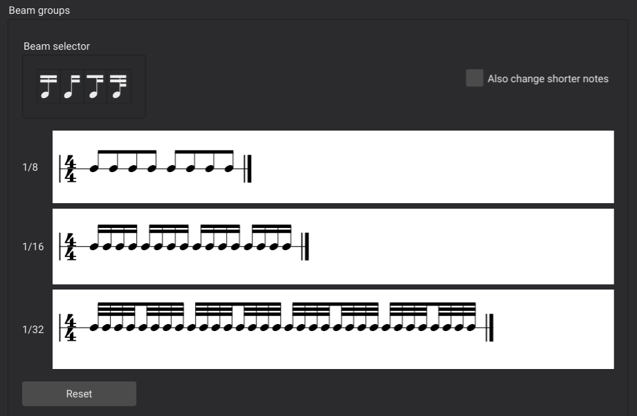
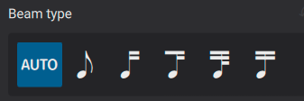
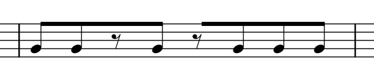
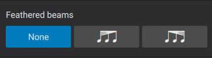

符杠
概述
符杠是连接相邻音符的线条，用来表示八分音符或更短音符的节奏分组（维基百科）。你可以控制音符之间是否存在符杠，以及它们的外观。
控制哪些音符加符杠
音符的默认符杠方式由拍号的属性决定。你可以编辑这些默认值，从而影响该拍号内所有音符的符杠，也可以覆盖单个音符的符杠，使其与拍号默认值不同。
设置拍号的默认符杠
请参阅主章节 拍号
每个拍号都有一组符杠默认值，用于控制该拍号下所有音符的符杠。由于你通常希望整个乐谱的符杠保持一致，因此在更改符杠时通常应从这里开始。要编辑给定拍号的默认值，请使用拍号属性对话框。
访问拍号属性
- 在乐谱中选中一个拍号
- 在属性面板中点击拍号属性按钮
- 按下文所述编辑符杠分组部分
你也可以通过右键单击拍号来访问此对话框。
注意：此对话框中的设置按乐谱生效，也按谱表生效。要将更改应用到同一乐谱中的其他谱表，你可以按住 Ctrl+Shift 将拍号拖到另一个谱表，其作用类似于从面板添加。要使自定义拍号可用于其他乐谱，按住 Ctrl+Shift 将其拖回面板即可。
符杠分组

要更改给定节拍上给定时值音符的符杠，请在符杠分组部分中单击对应的音符，以切换进入该音符的符杠的开启或关闭。也就是说，如果你单击一个当前已与前一个音符相连的音符，将会断开符杠；如果你单击一个当前未与前一个音符相连的音符，将会把它们连接起来。你也可以将某个符杠选择器图标拖到任意音符上，按后文所述设置其符杠。
如果你选择同时更改更短音符选项，那么对任一音符所做的更改也会影响同一节拍上时值更短的音符。
点击 重置 可删除打开此对话框以来所做的所有更改。注意，此按钮不会将设置重置回面板中的原始默认值。要撤销自添加拍号以来的所有更改，请使用面板替换拍号。
覆盖特定音符的默认符杠
拍号属性控制乐谱中音符的默认符杠，但你可以逐个音符地覆盖这些默认值，例如让某一个小节的符杠方式与另一个小节不同。这在编写某些用非标准方式加符杠更易读的节奏时很有用，或者在拍号属性中可用的选项不足以创建你想要的默认值时也很有用。它也是在休止符上创建符杠的唯一方法。
符杠属性设置在音符本身上。要更改两个音符之间的符杠，通常先从两个音符中的第二个开始选择，因为大多数符杠属性控制的是进入某个音符的符杠。注意，这些属性可以从属性面板或符杠属性面板设置，但本文讨论将聚焦于属性面板。
要更改给定音符的符杠：
- 选中音符
- 在属性面板的音符部分选择符杠选项卡
- 选择其中一个图标以设置相应的属性

从左到右，可用的属性为：
- 自动：将音符的符杠重置为拍号默认行为
- 无符杠：断开进入或离开所选音符的所有符杠
- 左侧断开符杠：断开进入所选音符的所有符杠
- 断开内部符杠（8 分）：除一条外，断开进入所选音符的所有符杠（适用于原本会有两条或更多符杠的音符）
- 断开内部符杠（16 分）：除两条外，断开进入所选音符的所有符杠（适用于原本会有三条或更多符杠的音符）
- 连接符杠：从前一个音符连接一条符杠进入所选音符（除非前一个音符被设置为无符杠）
跨越休止符的符杠

要将符杠延伸到休止符上：
- 选中休止符
- 应用连接符杠或左侧断开符杠属性
跨越小节线的符杠

要将符杠延伸穿过小节线：
- 选中小节线之后的第一个音符或休止符
- 应用连接符杠属性
控制符杠外观
断开和连接符杠是单个音符的功能，而符杠的实际外观可以通过选中符杠本身或它所连接的任意音符来控制。因此，要设置这些属性，你可以：
- 选中一个当前已加符杠的音符
- 在属性面板的音符部分中选择符杠选项卡
或者
- 选中符杠本身
无论哪种方式，此时你都会看到控制符杠外观的选项。
羽状符杠

属性面板中羽状符杠部分的按钮可用于表示相连音符的逐渐减速或逐渐加速（注意：播放中不支持此功能）。这些选项仅适用于使用多条符杠的 16 分音符及更短时值。

- 无：将符杠重置为标准（非羽状）外观
- 减速：使符杠向内收拢呈扇形，表示逐渐减速
- 加速：使符杠向外展开呈扇形，表示逐渐加速
符杠角度

符杠的角度可以通过选中它并拖动控制柄或使用方向键移动控制柄来直接编辑。但你也可以使用属性面板中的设置。你可能需要先点击更多按钮才能显示此部分。

这里的两个设置对应符杠上的左右控制柄，允许你独立设置符杠任意一侧的高度。
你也可以通过启用强制水平属性来强制符杠保持水平。
符杠样式
符杠的一些全局属性可以在格式 → 样式 → 符杠中设置：
- 符杠间距：设置相邻两条符杠之间的垂直距离。
- 符杠粗细：设置所有符杠的粗细。
- 断开符杠最小长度：设置断开符杠（如附点节奏中使用的符杠）的最小长度。
- 拉平所有符杠：勾选后使所有音符符杠保持水平，无论上下文如何。